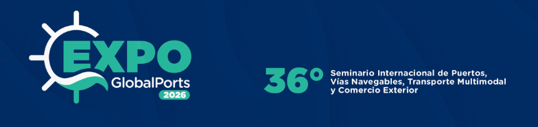

Ir al contenido
☰
ExpoGlobalPorts
/
Cargas portuarias
Cargando información…

36.º
Seminario Internacional de Puertos, Vías Navegables, Transporte Multimodal y Comercio Exterior
Cargando indicadores…
APERTURA DE LA CATEGORÍA
×
ExpoGlobalPorts · Tablero de indicadores